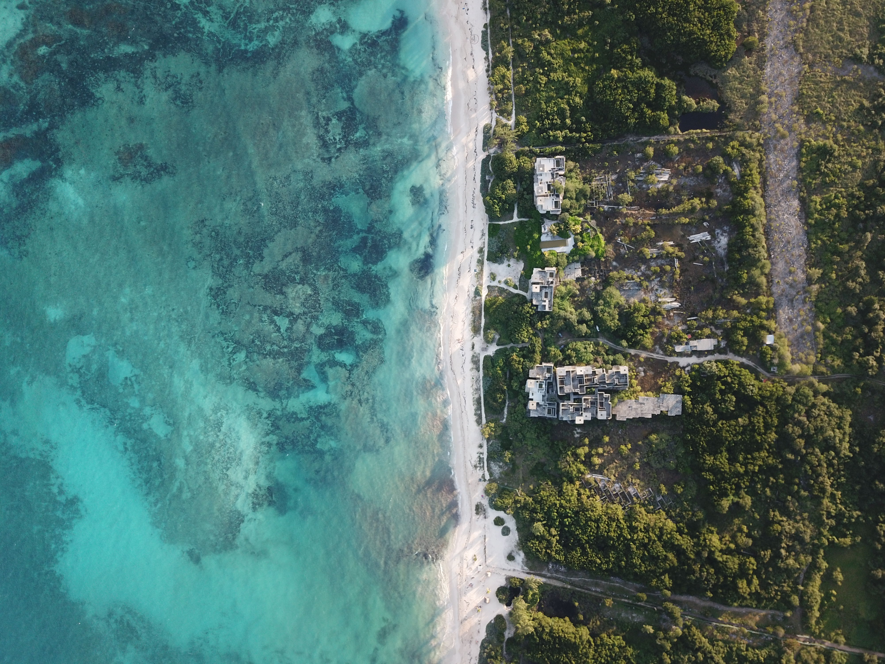
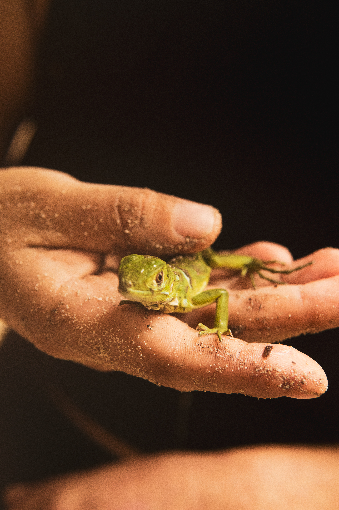
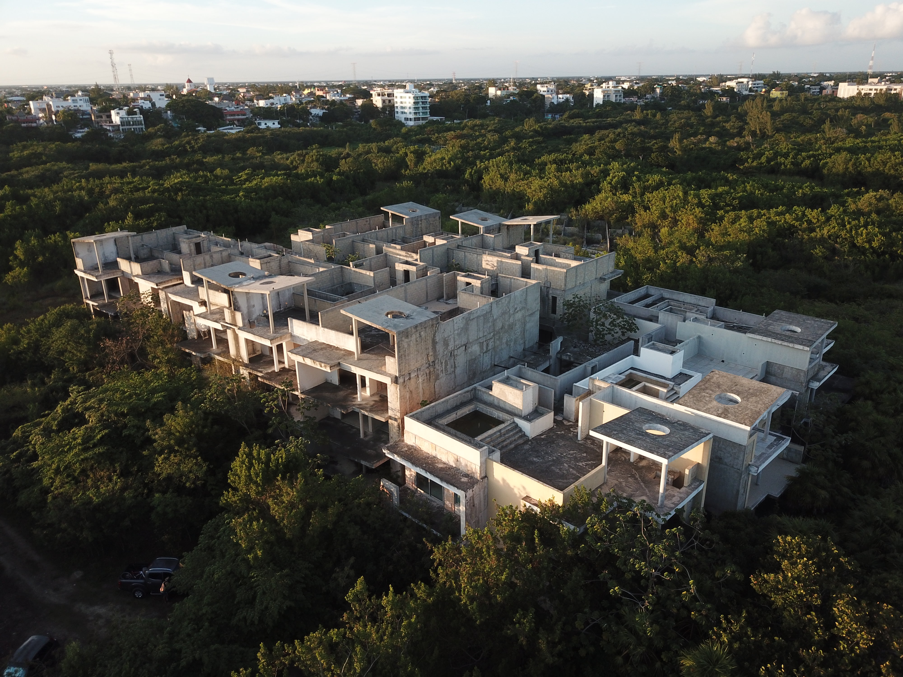
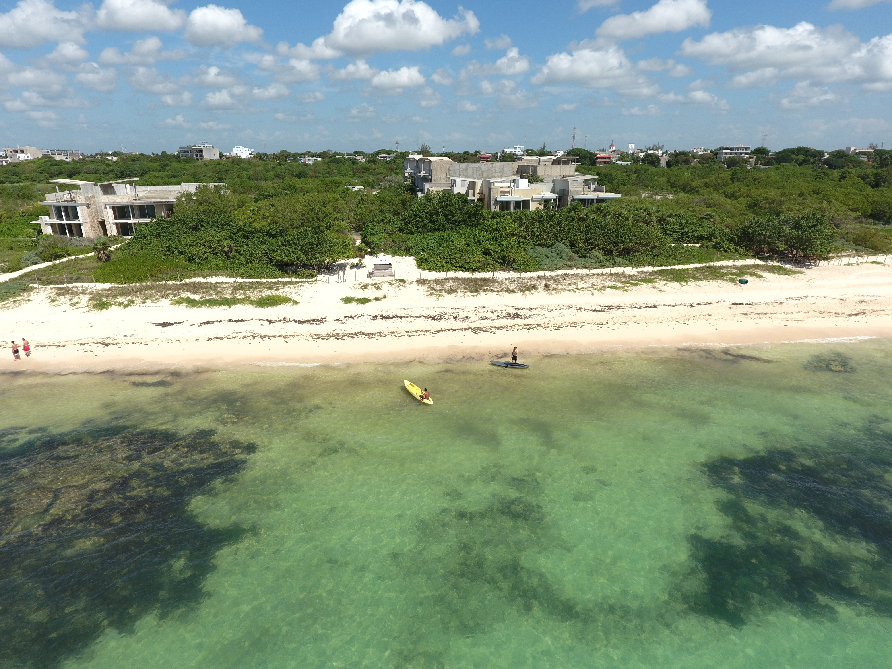
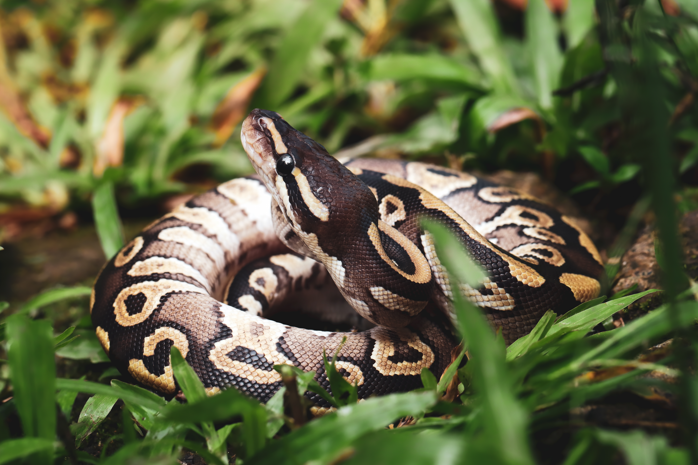
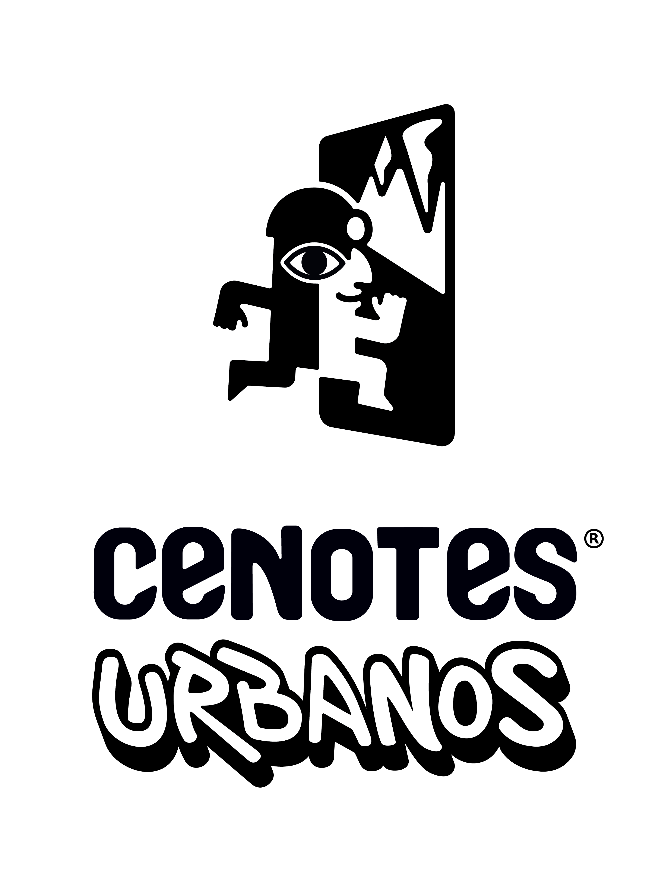

El Origen es la Tierra.
El Futuro es volver al Origen.



Con el paso del tiempo, Playa del Carmen se ha desarrollado aceleradamente, convirtiéndose en referente turístico mundial. Como iniciativa ciudadana, PULMÓN VERDE trabaja por la conservación de los ecosistemas de esta zona natural costera, ubicada entre el Hotel Coco Beach y la Playa 88.
El Colectivo Pulmón Verde registra y estudia las especies que habitan esta zona de manglar — incluyendo la Clusia flavia (Maya: Chuunup), una especie endémica peninsular en peligro de extinción.
En coordinación con el Colegio Mexicano de Guías en Turismo Responsable, se promueven capacitaciones, diplomados y talleres para construir conciencia ambiental.
Ver nuestros programas →Recorridos guiados por la zona de conservación, visitas a comunidades mayas activas, experiencias astronómicas y arqueología de la Riviera Maya.
Campo de estudio para biólogos, científicos y estudiantes. Centro CESTYMA — el primero en su tipo en Playa del Carmen y en México.
Saber más →Espacio para artesanos de comunidades mayas: miel de melipona, textiles, hamacas y productos naturales. Sin intermediarios — la comunidad retiene el beneficio.
Ver tienda →Apoya el cuidado del sitio. Estudiantes universitarios pueden cumplir su servicio social en ecología, comunicación, diseño y otras disciplinas.
Participar →El primer centro de investigación en Playa del Carmen y el primero de su tipo en México. Busca apoyo de SECIHTI y contrapartes internacionales para establecer un campo de estudio permanente.
Especies bajo la NOM-059 de SEMARNAT. Organismos endémicos encontrados exclusivamente en esta zona.
Sistemas hidrológicos únicos documentados en colaboración con Oceánotes Urbanos.
La ciencia como base del marco legal. Investigación que reduce impactos negativos y fomenta el turismo responsable.
"Reflexionando sobre el deterioro ambiental global, es claro que potencialmente todos somos parte del problema — aunque no todos tienen el potencial de ser parte de la solución."
La Riviera Maya aspira a convertirse en el tercer Geoparque de todo México — abriendo acceso a financiamiento internacional, legitimidad científica y redes globales de conservación.
El primer programa de intercambio de este tipo en Playa del Carmen — uniendo universidades de Canadá y México en tres semanas de trabajo de campo, inmersión cultural y ciencia.



Los abuelos, sacerdotes y ancianos son los custodios del conocimiento. La globalización ha erosionado esta transmisión generacional. Pulmón Verde facilita su recuperación sin comercializarlo ni explotarlo.

Miel de melipona, textiles, hamacas, madera trabajada y productos naturales de comunidades mayas de la Riviera Maya. Cada compra sostiene directamente a las familias artesanas.
Visitar la Tienda →Voluntariado, investigación, inversión, alianzas — todas las formas de contribuir son bienvenidas.
Voluntariado · Servicio social · Investigación académica
Ecoturismo · Inversión sostenible · Alianzas institucionales